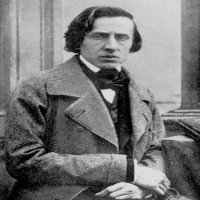
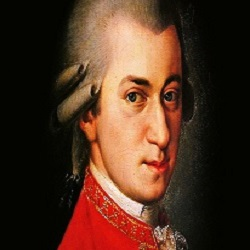
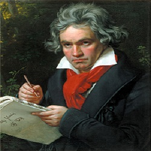
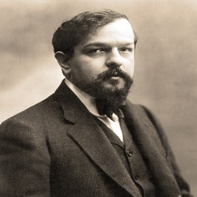
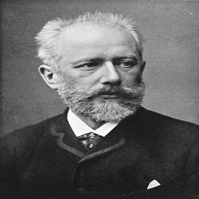

El piano es un instrumento musical armónico clasificado como instrumento de cuerda percutida por el sistema de clasificación tradicional. El músico que toca el piano se llama pianista.
Está compuesto por una caja de resonancia a la que se ha agregado un teclado mediante el cual se percuten las cuerdas de acero con martillos forrados de fieltro, produciendo el sonido, Las vibraciones se transmiten a través de los puentes a la tabla armónica, que las amplifica. Está formado por un arpa cromática de cuerdas múltiples, accionada por un mecanismo de percusión indirecta, a la que se le han añadido apagadores. Fue inventado en torno al año 1700 por Bartolomeo Cristofori.
Muchos han sido los compositores que han realizado obras para piano y en muchos casos esos mismos compositores han sido pianistas. Destacan figuras como Frédéric Chopin, Franz Liszt, Wolfgang Amadeus Mozart, Ludwig van Beethoven, Claude Debussy o Piotr Ilich Chaikovski. Fue el instrumento representativo del romanticismo musical y ha tenido un papel relevante en la sociedad, especialmente entre las clases más acomodadas de los siglos XVIII y XIX.